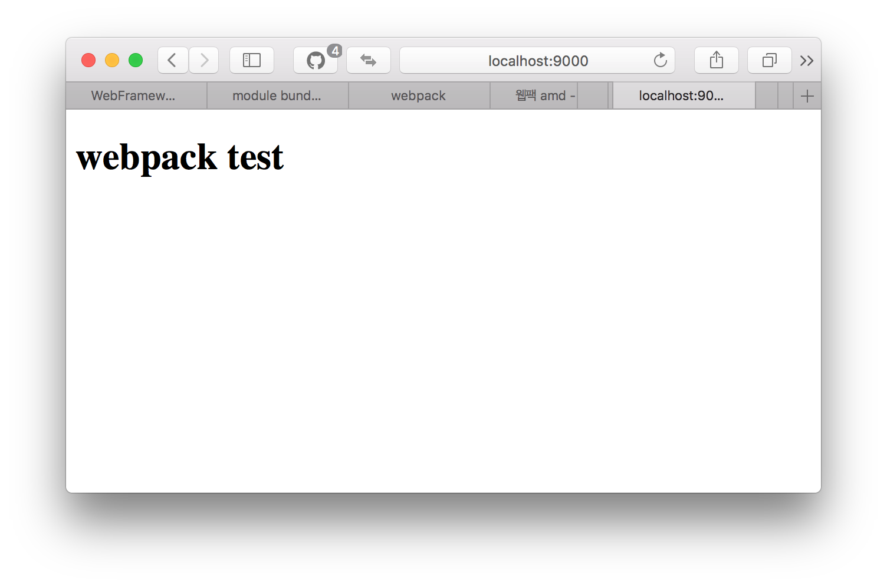

Gulp, Grunt와 더불어 Webpack은 자바스크립트 빌드 도구입니다. 사실 출시 된지는 몇년 되었지만 최근 리엑트 프로젝트에서 사용되면서 관심을 갖게 되었습니다. 그래서 요즘은 대부분의 자바스크립트 프로젝트에 웹팩을 사용하는 분위기 이며 Grunt, Gulp도 대체하는 것 같습니다. ECMAScript 2015의 트랜스파일러인 바벨(Babel)을 웹팩과 함께 사용하면서 웹팩의 활용도는 점점 증가하고 있습니다. 이번 포스팅에서는 웹팩 도구의 사용방법에 대해 알아보겠습니다.
웹펙을 왜 사용하나요?
여기서는 웹펙에 대한 좀 더 기본적인 사항을 살펴볼 것입니다.
sum.js와 app.js 파일을 로딩하는 index.html 파일을 개발한다고 가정해 봅시다. app.js는 sum.js에 있는 sum 함수를 사용합니다. 아마 이런 코드가 되겠죠.
// sum.js
const sum = (a, b) => a + b;
// app.js
sub(1, 2);
그리고 index.html에서는 이 두 파일을 로딩할 겁니다.
<script src="sum.js">
<script src="app.js">
여러 파일을 분할된 자바스크립트 파일은 로딩순서에 신경서야 합니다. 또한 sum.js와 app.js 처럼 의존성이 강한 파일들이 많이 있을 경우 index.html의 스크립트 로딩 태그는 상당히 길어질 것입니다. 이것은 개발에게 귀찮은 일일 뿐더라 웹페이지 로딩 성능에도 좋지 않습니다.
그래서 IFFE, AMD, CommonJS 스타일의 자바스크립트 모듈 시스템을 사용하여 파일을 분할하고, HTTP 요청을 줄여 네트웍 성능 개선을 위해 자바스크립트 파일을 하나로 합치기도 합니다. 웹팩은 이러한 작업을 하는데 적합한 도구이고 개발자가 설정할 옵션도 그리 많지 않습니다. (Gulp와 Grunt와 비교해 보면 그렇다구요.)
설치
웹팩은 노드 기반의 빌드 툴입니다. 노드 설치가 선행되었다는 가정하에 NPM으로 예제 코드를 시작하겠습니다.
npm init
프로젝트에 웹펙을 개발도구를 설치합니다.
npm install webpack --save-dev
이제 app.js, sum.js 파일을 bundle.js 파일로 합쳐 봅니다.
node_modules/.bin/webpack app.js bundle.js
> webpack-test@1.0.0 build /Users/Chris/Development/webpack-test
> webpack app.js bundle.js
Hash: bac049d2bb37225a459a
Version: webpack 1.14.0
Time: 48ms
Asset Size Chunks Chunk Names
bundle.js 1.44 kB 0 [emitted] main
[0] ./app.js 46 bytes {0} [built]
보통 묶음을 의미하는 bundle.js 라는 파일로 결과물을 생성합니다. 이제 index.html에서는 이 bundle.js만 로딩하면 됩니다.
설정
좀더 상세한 설정을 하려면 webpack.config.js 파일을 만드세요. 아래는 위와 동일한 기능을 하는 웹팩 설정 코드입니다.
module.exports = {
entry: './app.js',
output: {
filename: 'bundle.js'
}
}
웹펙을 사용하면서 빌드 파일이 추가되었고 기존의 소스파일과 동일한 폴더에서 관리하는 것은 좀 지저분하겠죠. 어플리케이션 파일을 저장하는 app 폴더와 빌드 파일을 저장하는 dist 파일을 만들어 파일을 분리해 봅니다.
app
/index.js
/sum.js
dist
/bundle.js
index.html
package.son
webpack.config.js
webpack.config.js도 아래와 같이 수정합니다.
module.exports = {
entry: './app',
output: {
filename: 'bundle.js',
path: 'dist'
}
}
webpack.config.js 파일이 있는 경우에는 웹팩만 실행해도 됩니다. 간단히 패키지 파일에 build 스크립트로 등록합니다.
{
"scripts": {
"build": "node_modules/.bin/webpack"
}
}
개발서버
웹팩과 함께 제동되는 도구중에 개발 서버를 구동해 주는 툴이 있는데 webpack-dev-server라는 툴입니다.
npm 으로 툴을 설치합니다.
npm install webpack-dev-server --save-dev
webpack.config.js파일에 데브 서버(devServer)의 설정을 추가합니다.
module.exports = {
entry: './app',
output: {
filename: 'bundle.js',
path: 'dist'
},
devServer: {
contentBase: './',
compress: true,
port: 9000
}
}
그리고 나서 webpack-dev-server 파일을 실행하면 webpack.config.js 설정파일을 참고하여 9000 포트에 노드 서버를 구동합니다.
node_modules/.bin/webpack-dev-server
webpack-test@1.0.0 serve /Users/Chris/Development/webpack-test
> webpack-dev-server
http://localhost:9000/webpack-dev-server/
webpack result is served from /
content is served from ./
Hash: bac049d2bb37225a459a
Version: webpack 1.14.0
Time: 66ms
Asset Size Chunks Chunk Names
bundle.js 1.44 kB 0 [emitted] main
chunk {0} bundle.js (main) 46 bytes [rendered]
[0] ./app/index.js 46 bytes {0} [built]
webpack: bundle is now VALID.
웹브라우져러 http://localhost:9000 에 접속하면 index.html 페이지를 확인할 수 있습니다.

package.json 파일에 serve 스크립트로 등록하여 사용할 수 있습니다.
{
"scripts": {
"build": "node_modules/.bin/webpack",
"serve": "node_modules/.bin/webpack-dev-server"
}
}